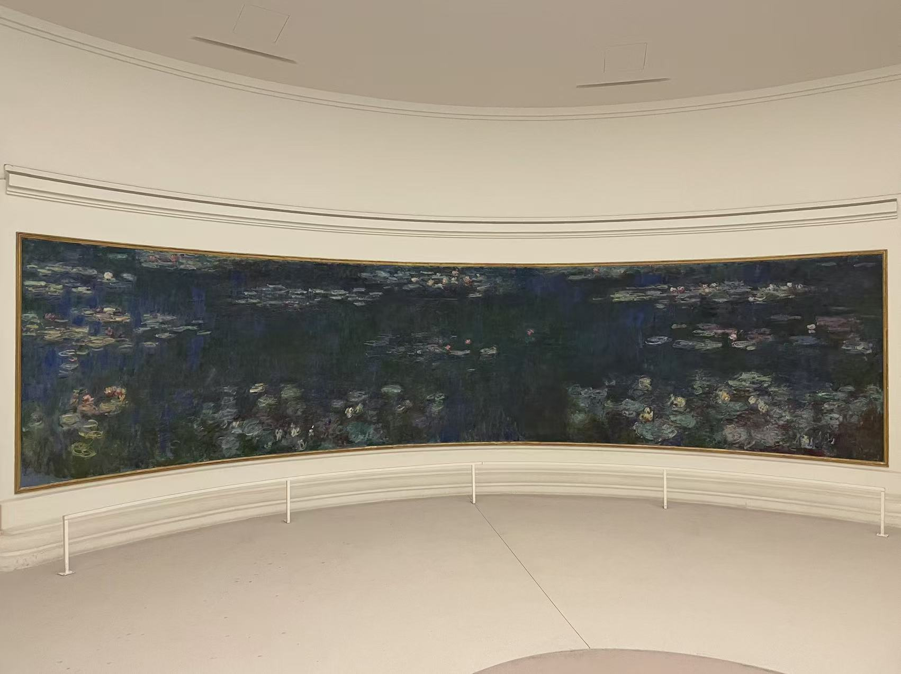
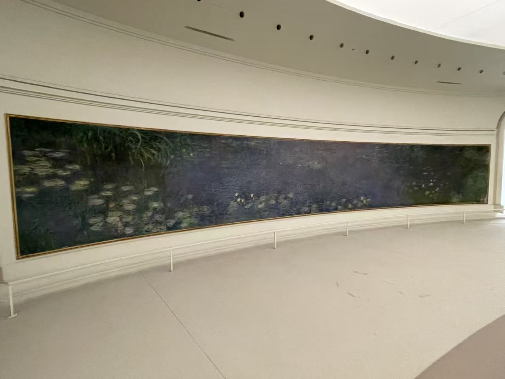
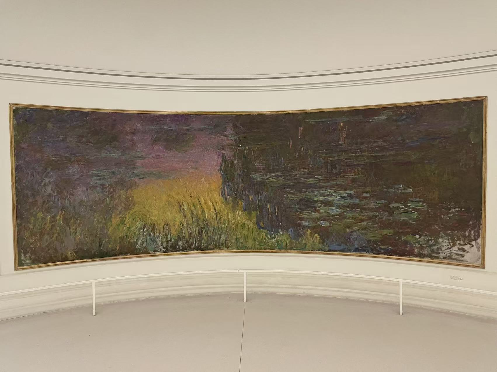
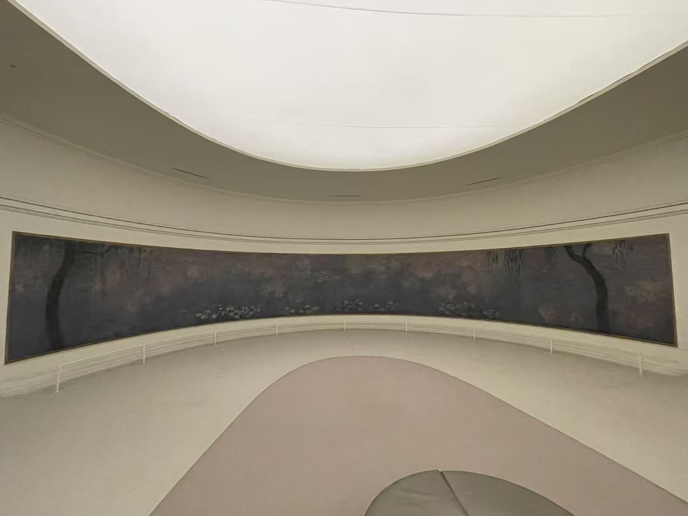
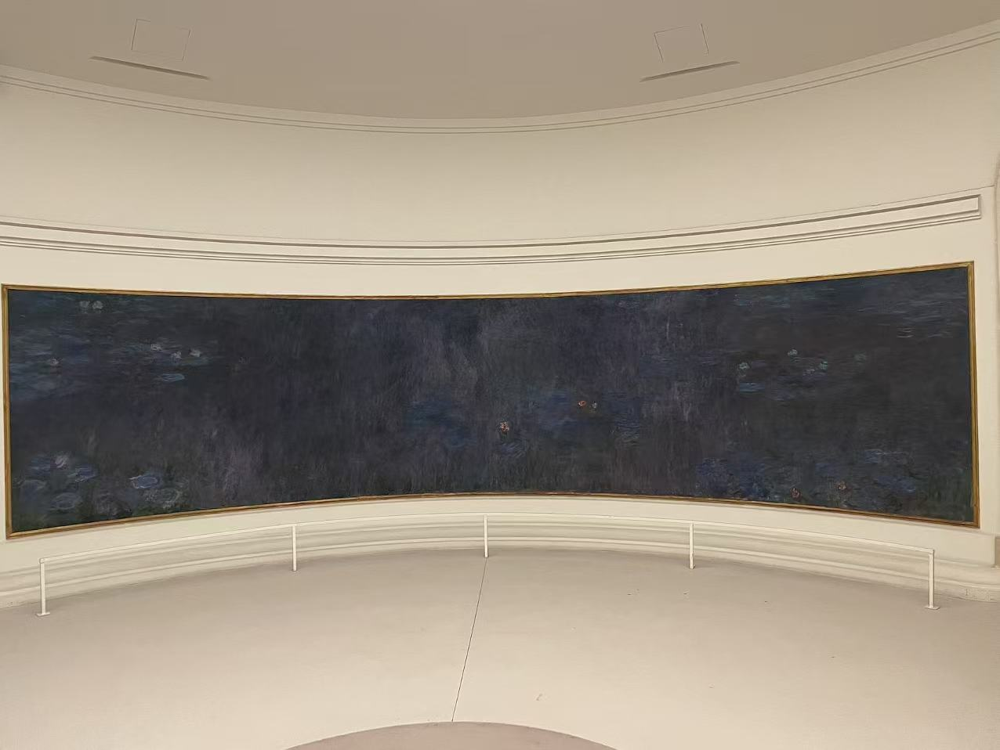
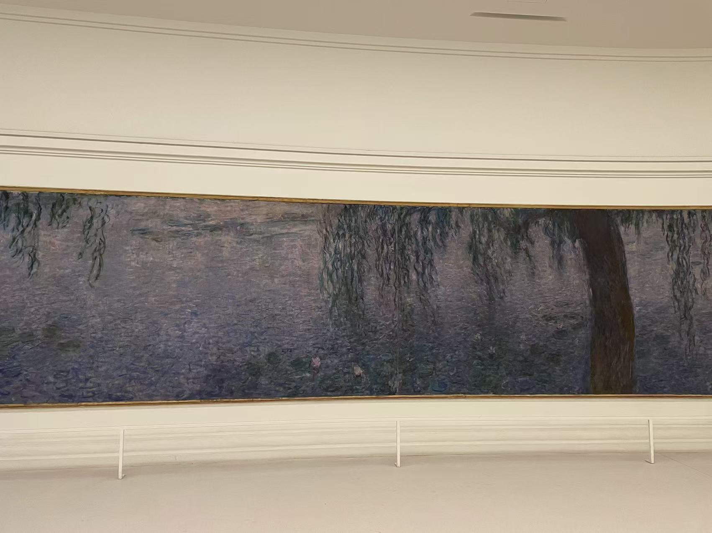

CLAUDE MONET / 走进橘园
睡莲组画（橘园）
Les Nymphéas

- 作者
- 克洛德·莫奈
- 年代
- 1915—1926年；1927年陈列开放
- 材料
- 布面油画
- 收藏／所在
- 橘园美术馆 · 巴黎
- 编号／位置
- 橘园两间椭圆形展厅内的组画
看画
长幅睡莲沿弧形墙面展开，照片里的天窗、座椅与观看距离，也是这组记录的一部分。
作品札记与资料
橘园的《睡莲》由八个构图组成，分布在两间椭圆形展厅中。七张现场照片记录了其中的画面和展厅视角，可以看见长幅睡莲怎样随着弧形墙面延伸。
1918年11月停战后，莫奈向法国提出赠画，以和平为意；此后计划不断发展，最终在他去世后的1927年于橘园陈列。
可以先看那张暖色夕照，再回到深蓝的水面与柳树倒影。花叶的横向分布和柳干的竖向线条，让人在长幅之间有不同的停留方式。
基本信息据馆方资料与已有现场展签 · 2026年10月核对。
LOOK CLOSER
展厅中的不同视角
点击照片放大，可以在大图中切换照片。











